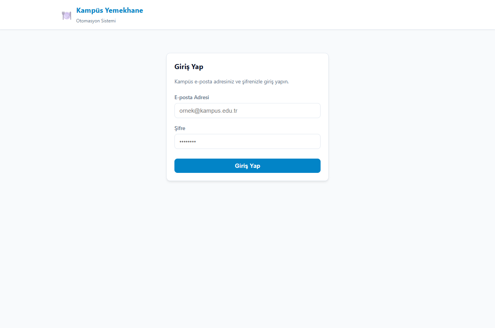

Kampüs Yemekhane Otomasyonu
Aşama 1–4 Kurulum, Mimari ve Doğrulama Çıktıları
fetch) kullanılmıştır. Apache 2.4 (:8080) statik arayüzü sunar ve /api/ isteklerini uygulama:8000 servisine yönlendirir.
1. Aşama 1: Docker Altyapısı ve GTID Replikasyonu
docker compose up -d komutuyla tüm sistem ek adım olmadan ayağa kalkar:
| Servis | İmaj / Port | Görev |
|---|---|---|
mysql-primary | mysql:8.0 (:3307) | Yazma işlemleri, şema, view'lar ve stored procedure'ler |
mysql-replica | mysql:8.0 (:3308) | GTID replikasyonu alan salt-okunur okuma sunucusu |
replica-setup | mysql:8.0 | SOURCE_AUTO_POSITION=1 ile replikasyonu ve super_read_only ayarını yapar |
redis | redis:7-alpine (:6379) | Menü önbelleği ve kullanıcı oturum deposu |
uygulama | python:3.11-slim (:8000) | FastAPI katmanlı REST API |
frontend | httpd:2.4-alpine (:8080) | Statik HTML/CSS/JS dosyaları ve /api/ reverse proxy |
1.1. Aşama 1 Doğrulama Komutları ve Çıktıları
$ docker compose ps
NAME SERVICE STATUS
yemekhane-frontend frontend Up (healthy)
yemekhane-mysql-primary mysql-primary Up (healthy)
yemekhane-mysql-replica mysql-replica Up (healthy)
yemekhane-redis redis Up (healthy)
yemekhane-replica-setup replica-setup Exited (0)
yemekhane-uygulama uygulama Up (healthy)
$ docker exec yemekhane-mysql-replica mysql -u root -prootpass -e "SHOW REPLICA STATUS\G"
Replica_IO_Running: Yes | Replica_SQL_Running: Yes | Seconds_Behind_Source: 0 | Auto_Position: 1
$ docker exec yemekhane-mysql-primary mysql -u root -prootpass yemekhane_db -e "CALL sp_bakiye_yukle(6, 100.00);"
$ docker exec yemekhane-mysql-replica mysql -u root -prootpass yemekhane_db -e "SELECT id, ad, bakiye FROM kullanicilar WHERE id = 6;"
id ad bakiye
6 Caner 290.00
$ docker exec yemekhane-mysql-replica mysql -u root -prootpass yemekhane_db -e "UPDATE kullanicilar SET bakiye = 9999 WHERE id = 6;"
ERROR 1290 (HY000) at line 1: The MySQL server is running with the --super-read-only option so it cannot execute this statement
$ docker stop yemekhane-mysql-replica
$ docker exec yemekhane-mysql-primary mysql -u root -prootpass yemekhane_db -e "CALL sp_bakiye_yukle(6, 50.00);"
$ docker start yemekhane-mysql-replica
$ docker exec yemekhane-mysql-replica mysql -u root -prootpass yemekhane_db -e "SELECT id, ad, bakiye FROM kullanicilar WHERE id = 6;"
id ad bakiye
6 Caner 340.002. Aşama 2: Katmanlı Mimari, Stored Procedure ve Arayüz
Uygulama Routers → Services → DAL → MySQL katmanlarından oluşur. Router içinde SQL bulunmaz, para hareketi yapan işlemler doğrudan stored procedure çağırır (sp_rezervasyon_yap, sp_rezervasyon_iptal, sp_bakiye_yukle, sp_turnike_gecis).
2.1. Bir İsteğin Kod İçindeki Yolu (Örnek: POST /api/reservations)
# 1. Route (backend/app/routers/reservations.py)
@router.post("", response_model=ReservationCreateResponse)
def create_reservation(req: ReservationCreateRequest, user: dict = Depends(get_current_user)):
return ReservationService.create_reservation(user["id"], req.menu_id, req.porsiyon)
# 2. Service (backend/app/services/reservation_service.py)
result = ReservationDAL.make_reservation(kullanici_id, menu_id, porsiyon)
coords = MenuDAL.get_menu_cache_coords(menu_id)
if coords:
invalidate_menu_cache(coords["yemekhane_id"], str(coords["tarih"]), coords["ogun_id"])
return {"message": "Rezervasyonunuz başarıyla oluşturuldu.", "rezervasyon_id": result["rezervasyon_id"], "guncel_bakiye": result["guncel_bakiye"]}
# 3. Veri Katmanı / DAL (backend/app/dal/reservation_dal.py)
with get_primary_connection() as conn:
with conn.cursor() as cursor:
cursor.execute("CALL sp_rezervasyon_yap(%s, %s, %s);", (kullanici_id, menu_id, porsiyon))
cursor.execute("SELECT bakiye FROM kullanicilar WHERE id = %s;", (kullanici_id,))
user_row = cursor.fetchone()
conn.commit()
# 4. Yanıt: HTTP 200 JSON (veya SP SQLSTATE 45000 fırlatırsa HTTP 400 {"detail": "Bakiye yetersiz."})2.2. Replikasyon Gecikmesi (Replication Lag) Açıklaması
Menü listeleme, rezervasyon geçmişi ve istatistik gibi okuma sorguları get_replica_connection() ile okuma replikasına gönderilir. Ancak rezervasyon yapma, rezervasyon iptali ve bakiye yükleme sonrasında gösterilen güncel bakiye doğrudan primary sunucudan (get_primary_connection() / use_primary=True) okunur. Bunun sebebi MySQL replikasyonunun asenkron çalışmasıdır: primary üzerinde yapılan bakiye düşümü replikaya kısa bir gecikmeyle (replication lag) yansıyabileceği için, işlemin hemen ardından replikadan okuma yapılırsa kullanıcı ekranda eski bakiyesini görebilir.
3. Aşama 3: Redis Önbellek ve Oturum Yönetimi
| Görev | Anahtar | Süre (TTL) | Ne Zaman Silinir? |
|---|---|---|---|
| Menü önbelleği | menu:{yemekhane_id}:{tarih}:{ogun_id} |
Günün sonuna kadar (23:59:59) |
Yönetici menüyü değiştirdiğinde (ve rezervasyon/değerlendirmede) |
| Oturum | oturum:{token} |
30 dakika (her istekte yenilenir) | Çıkış yapıldığında (POST /api/auth/logout) |
# Menü önbelleği: ilk istek DB'den, ikinci istek Redis'ten (uygulama logu)
[INFO] redis: [CACHE MISS] Menü Redis'te yok, DB'den okunacak: menu:1:2026-10-27:2
[INFO] redis: [CACHE SET] Menü Redis'e yazıldı: menu:1:2026-10-27:2 (TTL: 19171 sn)
[INFO] redis: [CACHE HIT] Menü Redis'ten getirildi: menu:1:2026-10-27:2
$ docker exec yemekhane-redis redis-cli ttl "menu:1:2026-10-27:2"
(integer) 19148
# Yönetici menüyü güncelledikten sonra eski kayıt silinir
$ docker exec yemekhane-redis redis-cli exists "menu:1:2026-10-27:2"
(integer) 0
# Uygulama container'ı yeniden başlasa da oturum korunur; çıkışta silinir
$ docker restart yemekhane-uygulama
$ curl -s -H "Authorization: Bearer f06f3782..." http://localhost:8080/api/auth/me # -> 200 OK
$ docker exec yemekhane-redis redis-cli keys "oturum:*"
1) "oturum:f06f37822b904fc685c163cf9714b19e"
# POST /api/auth/logout sonrası:
$ docker exec yemekhane-redis redis-cli exists "oturum:f06f37822b904fc685c163cf9714b19e"
(integer) 04. Aşama 4: Değişiklik Talebi (04_degisiklik.sql)
Tek migration dosyasıyla rezervasyonlar tablosuna porsiyon ENUM('tam', 'yarim') DEFAULT 'tam' sütunu eklendi (eski kayıtlar tam sayılır), kullanici_alerjenleri tablosu oluşturuldu ve sp_rezervasyon_yap güncellendi. Kahvaltıda yarım porsiyon reddedilir; öğle/akşam menülerinde ücret %60 hesaplanır.
$ docker exec yemekhane-mysql-replica mysql -u root -prootpass yemekhane_db -e "SHOW CREATE TABLE rezervasyonlar\G"
Create Table: CREATE TABLE `rezervasyonlar` (
`id` int NOT NULL AUTO_INCREMENT,
`kullanici_id` int NOT NULL,
`menu_id` int NOT NULL,
`ucret` decimal(10,2) NOT NULL,
`porsiyon` enum('tam','yarim') COLLATE utf8mb4_unicode_ci NOT NULL DEFAULT 'tam',
`durum` enum('aktif','kullanildi','iptal') COLLATE utf8mb4_unicode_ci NOT NULL DEFAULT 'aktif',
...
) ENGINE=InnoDB DEFAULT CHARSET=utf8mb4 COLLATE=utf8mb4_unicode_ci
$ docker exec yemekhane-mysql-replica mysql -u root -prootpass yemekhane_db -e "SHOW CREATE TABLE kullanici_alerjenleri\G"
Create Table: CREATE TABLE `kullanici_alerjenleri` (
`kullanici_id` int NOT NULL,
`alerjen_id` int NOT NULL,
`olusturulma_tarihi` timestamp NULL DEFAULT CURRENT_TIMESTAMP,
PRIMARY KEY (`kullanici_id`,`alerjen_id`),
...
) ENGINE=InnoDB DEFAULT CHARSET=utf8mb4 COLLATE=utf8mb4_unicode_ci
# Kahvaltıda yarım porsiyon denemesi -> HTTP 400:
{"detail": "Kahvaltıda yarım porsiyon seçeneği bulunmamaktadır."}
# Öğle menüsünde yarım porsiyon (45.00 TL -> 27.00 TL) -> HTTP 200:
{"message": "Rezervasyonunuz başarıyla oluşturuldu.", "rezervasyon_id": 366, "guncel_bakiye": 163.0}
# Eski Redis menü kayıtlarının temizlenmesi:
$ docker exec yemekhane-redis redis-cli flushdb
OK5. Ekran Görüntüleri (Masaüstü ve ~400 px Mobil)



6. Git Etiketleri
| Commit | Tarih | Etiket | Açıklama |
|---|---|---|---|
dc7d599 | 2026-10-22 | asama-1 | Docker Compose altyapısı, şema, örnek veri ve GTID replikasyon |
70469dc | 2026-10-26 | asama-2 | FastAPI katmanlı mimari, SP entegrasyonu ve 7 duyarlı ekran |
a41bec1 | 2026-10-31 | asama-3 | Redis menü önbelleği, oturum yönetimi ve cache invalidation |
04763d6 | 2026-11-04 | asama-4 | 04_degisiklik.sql, yarım porsiyon (%60) ve alerjen uyarısı |